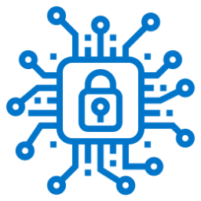

La ciberseguridad es un tema del que se escucha mucho en tiempos recientes pero, ¿que significa realmente ciberseguridad?
Al hablar de ciberseguridad nos referimos a “todos aquellos procedimientos, mecanismos y tecnologías que se emplean para proteger una infraestructura informática, cuyo principal objetivo es preservar el activo más importante de una compañía: la información”
La ciberseguridad, también conocida como seguridad digital, es la práctica de proteger su información digital, dispositivos y activos. Esto incluye: